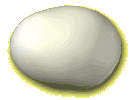
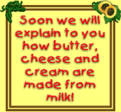
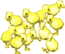

|
 When you break an egg, you will see that the shell is very hard and that inside there is both a white part and a yellow part called a yolk. The egg is produced by the hen, which has been fertilized by the male cock. In the middle of the egg yolk there is a seed. This seed feeds on the white of the egg and the yolk, and grows bigger. The shell protects the developing seed by stopping germs from getting in and attacking it. However, for all this to happen, the hen must sit on the egg and keep it warm. The eggs that you eat are collected as soon as they are laid, so the seed has not had time to develop. If the farmer lets the hen sit on the egg, a little chick will break the shell with its beak 21 days later. The chicks grow very quickly. As soon as they hatch out of the egg they can walk on their own, and when they are 5 weeks old they are already quite big chickens and are ready to lay their first eggs.  Hens tend to lay a lot more eggs in summer because it is lighter outside. |
| You
can check that you've understood this page! Click here to play! |
If
you'd like to find a recipe that uses eggs, click here! |